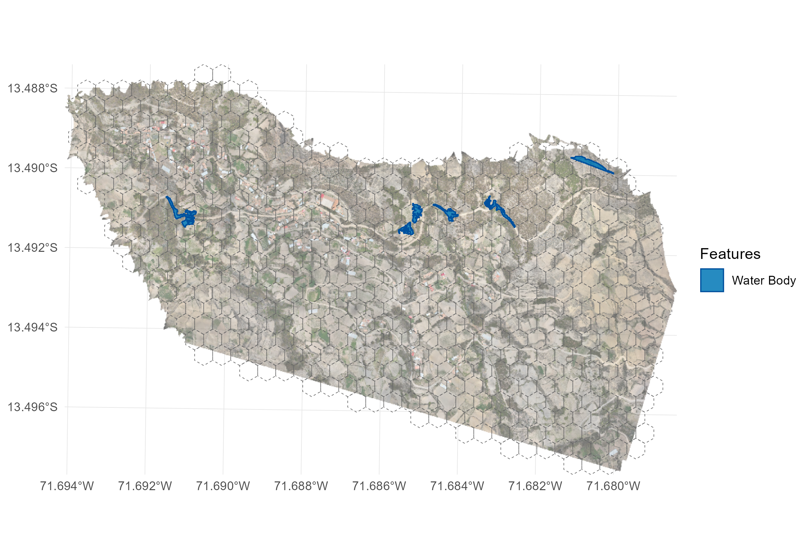

Case 03 - Water Body Segmentation & Grid Analysis
Source:vignettes/case3_water_segmentation_grid_analysis.Rmd
case3_water_segmentation_grid_analysis.RmdAutomated extraction of water bodies, building delineation, and operational grid aggregation
1 Context
Environmental characteristics of the study area include:
- Micro-topographic drainage sinks and slow-moving stream margins.
- Artificial water depressions created by excavations, irrigation trenches, and ponds.
- Clustered rural dwellings situated in close proximity to standing water bodies.
- High spatial heterogeneity where residential roofs and natural vegetation intermix.
1.1 Objective
Automatically segment surface water bodies and residential building footprints from drone orthomosaics, summarize physical dimensions (counts, areas in square meters, perimeters), and intersect both feature classes with an operational surveillance grid to quantify how many houses and water bodies exist per grid cell.

2 Functions from drones4health
| Variable / Target | Function | Description |
|---|---|---|
| Water Body Segmentation | d4h_segment_water() |
Detects and vectorizes surface water pools using spectral thresholding or Deep Learning (SAM), with optical darkness filtering to avoid metal roof confusion. |
| Building Footprint Delineation | d4h_segment_buildings() |
Extracts house roofs and structure centroids by integrating RGB brightness thresholds and vegetation masks. |
| Surveillance Tessellation | d4h_hex_grid() |
Creates regular hexagonal spatial partitions across the study area. |
| Distance to Water Modeling | d4h_distance_to_water() |
Computes Euclidean distances and proximity scores from structures to aquatic sources. |
3 Workflow
3.2 Spatial Data Preparation
We load the orthomosaic bands and compute intermediate spectral layers (NDWI and NDVI) used to guide object-based segmentation:
# Define input paths to drone imagery
path_rgb <- "img/Ohuay_D.tif"
path_nir <- "img/Ohuay_NIR.tif"
path_r <- "img/Ohuay_R.tif"
path_g <- "img/Ohuay_G.tif"
# Calculate spectral indices for water and canopy discrimination
r_ndwi <- d4h_ndwi(green = path_g, nir = path_nir)
r_ndvi <- d4h_ndvi(nir = path_nir, red = path_r)3.3 Automated Water Body Segmentation
d4h_segment_water() isolates water surfaces while
preventing bright reflective metal roofs from being misclassified as
water through optical brightness clamping:
# Segment water bodies with optical brightness protection and geometric filters
water_sf <- d4h_segment_water(
raster_in = r_ndwi,
rgb_raster = path_rgb, # Optical brightness constraint
threshold = 0.0, # NDWI threshold for water delineation
is_ndwi = TRUE,
max_water_brightness = 95.0, # Excludes shiny metal roofs
min_area_m2 = 2.0, # Minimum pool area (filters noise)
max_area_m2 = 50000.0, # Maximum water body area
method = "spectral" # "spectral" or "sam"
)
# Inspect detected water polygons
print(water_sf)3.4 Residential Building Footprint Segmentation
We extract residential dwellings and structures using visible contrast and vegetation masking:
# Segment residential house footprints and centroids
buildings_sf <- d4h_segment_buildings(
rgb_raster = path_rgb,
ndvi_raster = r_ndvi,
min_area_m2 = 12.0,
max_area_m2 = 600.0,
brightness_min = 135.0,
ndvi_max = 0.25,
method = "spectral"
)
# Inspect detected building polygons
print(buildings_sf)3.5 Segmentation Summary & Spatial Grid Intersection
We summarize the overall segmented features and intersect them with an operational 50 m surveillance grid to determine the exact number of houses and water bodies per cell:
# 1. Summary of segmented features across the entire flight extent
cat("=== SEGMENTED WATER BODIES SUMMARY ===\n")
cat("Total water bodies detected:", nrow(water_sf), "\n")
cat("Total water surface area:", round(sum(water_sf$area_m2), 2), "m² (",
round(sum(water_sf$area_m2) / 10000, 3), "ha)\n")
cat("Mean pool area:", round(mean(water_sf$area_m2), 2), "m²\n\n")
cat("=== SEGMENTED DWELLINGS SUMMARY ===\n")
cat("Total residential structures detected:", nrow(buildings_sf), "\n")
cat("Total built roof area:", round(sum(buildings_sf$area_m2), 2), "m²\n\n")
# 2. Generate operational 50m hexagonal grid
grid_hex <- d4h_hex_grid(aoi = r_ndvi, cell_size = 50)
grid_sf <- sf::st_as_sf(grid_hex)
# 3. Aggregate water bodies per grid cell
water_cents <- sf::st_centroid(water_sf)
water_join <- sf::st_join(water_cents, grid_sf)
water_counts <- water_join |>
sf::st_drop_geometry() |>
group_by(grid_id) |>
summarise(
n_water_bodies = n(),
total_water_area = sum(area_m2, na.rm = TRUE)
)
# 4. Aggregate residential houses per grid cell
build_cents <- sf::st_centroid(buildings_sf)
build_join <- sf::st_join(build_cents, grid_sf)
build_counts <- build_join |>
sf::st_drop_geometry() |>
group_by(grid_id) |>
summarise(
n_houses = n(),
total_built_area = sum(area_m2, na.rm = TRUE)
)
# 5. Consolidate combined metrics into the spatial grid
grid_analysis <- grid_sf |>
left_join(water_counts, by = "grid_id") |>
left_join(build_counts, by = "grid_id") |>
mutate(
n_water_bodies = coalesce(n_water_bodies, 0L),
total_water_area = round(coalesce(total_water_area, 0), 1),
n_houses = coalesce(n_houses, 0L),
total_built_area = round(coalesce(total_built_area, 0), 1),
# Priority classification: cells with co-occurring dwellings and water bodies
priority_tier = case_when(
n_water_bodies >= 2 & n_houses >= 1 ~ "High Priority",
n_water_bodies >= 1 & n_houses >= 1 ~ "Moderate Priority",
n_water_bodies >= 1 & n_houses == 0 ~ "Water Source Focus",
n_water_bodies == 0 & n_houses >= 1 ~ "Settlement Monitoring",
TRUE ~ "Baseline"
)
)
head(sf::st_drop_geometry(grid_analysis), 10)3.6 Priority Zonation & Vector Surveillance Mapping
We generate cartographic visualizations highlighting operational cells prioritized for immediate vector surveillance interventions:
# Thematic map of surveillance cells stratified by intervention priority
ggplot() +
geom_sf(data = grid_analysis, aes(fill = priority_tier), alpha = 0.65, color = "gray40") +
geom_sf(data = water_sf, fill = "#1f78b4", color = "#08519c", alpha = 0.8) +
geom_sf(data = buildings_sf, fill = "#e31a1c", color = "black", size = 0.3) +
scale_fill_manual(
name = "Surveillance Priority",
values = c(
"High Priority" = "#d73027",
"Moderate Priority" = "#fc8d59",
"Water Source Focus" = "#fee08b",
"Settlement Monitoring" = "#e0f3f8",
"Baseline" = "#ffffff"
)
) +
theme_minimal() +
labs(
title = "Operational Vector Surveillance Zonation",
subtitle = "Hexagonal surveillance cells stratified by dwelling and water body co-occurrence",
caption = "Data: Ultra-high resolution UAV orthomosaic - drones4health"
)